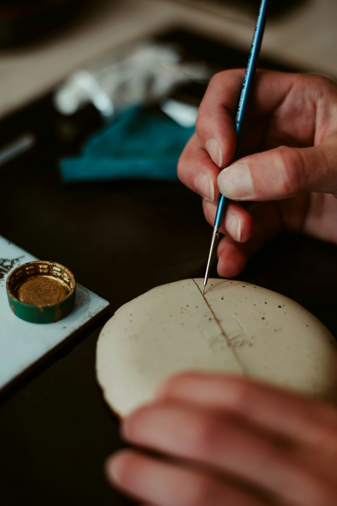
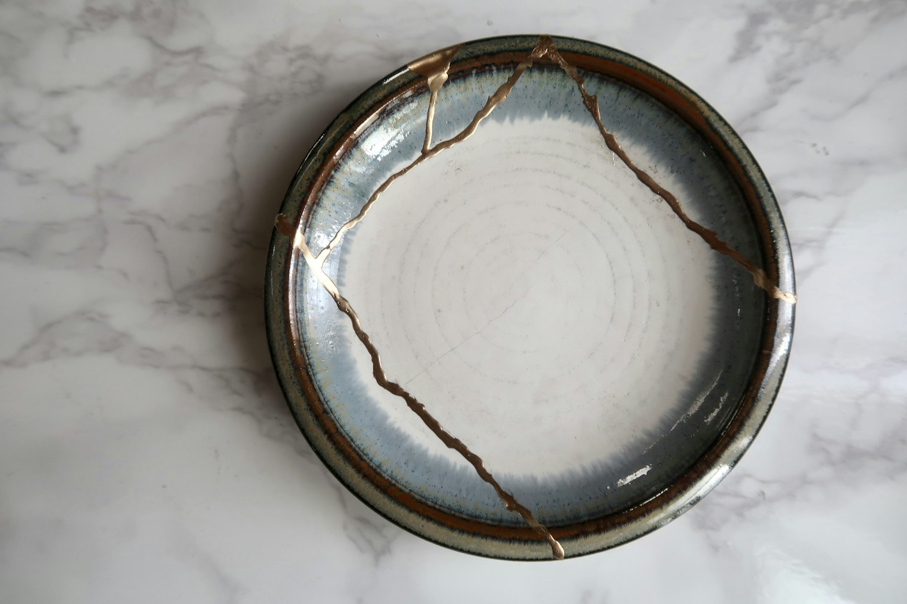
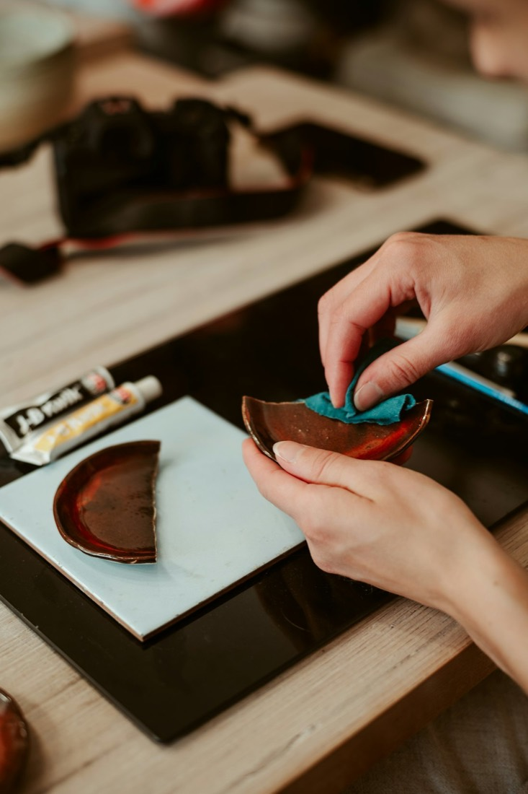
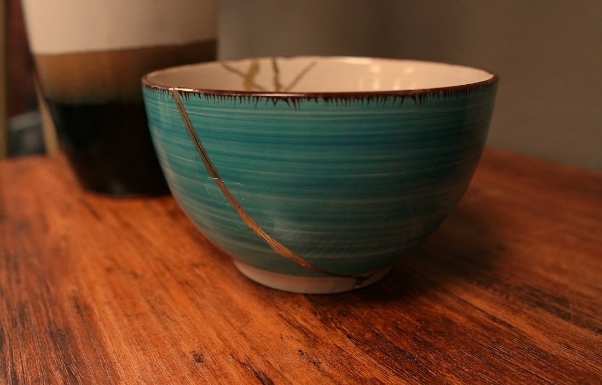
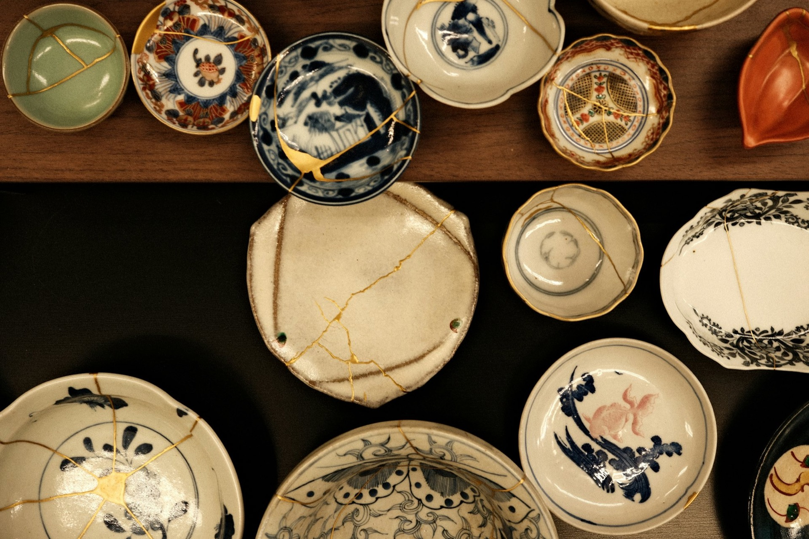

欠け・割れの金継ぎ
材質と品物、状態に合わせてお直しします。

器のお直し工房 東京・世田谷
女性だけで運営する、器のお直し工房です。体に安全な漆を使った、丁寧な仕事が好評です。
器のお直し工房 東京・世田谷
女性だけで運営する、器のお直し工房です。体に安全な漆を使った、丁寧な仕事が好評です。
割れ・欠け
割れた器も、
欠けた器も。
材質と品物、状態に合わせてお直しします。
金継ぎの3Dイメージです
今まではご紹介の方だけのお直しをお請けしていましたが、ホームページを公開し、広く修理をお請けできるようになりました。
赤平一枝が金継ぎに出会ったのは30年前。専門である鎌倉彫に漆をかけるために漆芸を学んだことがきっかけでした。今はスタッフも充実し、丈夫で美しい仕上がりに取り組んでいます。

材質と品物、状態に合わせてお直しします。

なくなった蓋も、木で作って漆で仕上げます。

朝日カルチャーセンター新宿教室、横浜馬車道で。

料金は割れと欠けの状態によります。金粉仕上げは金相場により変わる場合があります。修理をお受けした場合、返送の送料は工房が負担します。
| ご相談 | まずはメールで |
|---|---|
| 流れ | メール → お見積り → お品物を送っていただく → お直し |
まずはメールで、器の様子をお知らせください。